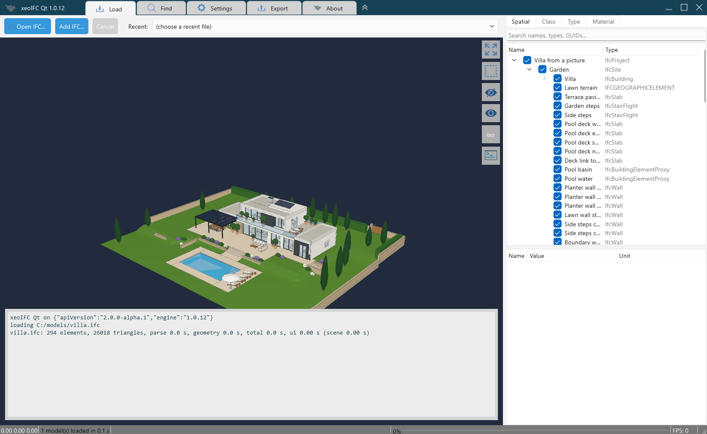

A desktop IFC viewer on xeoifc.dll
xeoIFC Qt is a desktop IFC viewer for Windows and Linux. It loads large IFC files and many files at once, shows them in 3D with the model tree and the properties, finds elements and writes a selection to a new IFC file. It is about 4,500 lines of C++ with Qt 6 Widgets, and its source code is open (MIT licence).
The IFC work is done by xeoifc.dll (libxeoifc.so on Linux), the native library of xeoIFC. It reads
the files, tessellates them, draws them into the application window, answers queries and writes IFC. The application uses
60 of the 67 functions of one plain C header. This page shows the calls, what the library can do and how fast it is.
1. The application

- Open
.ifcand.ifczipfiles (IFC 2x3, IFC 4, IFC 4.3) from the file dialog, the recent list or by drag and drop. Several files load in parallel into one scene. - Rotate about the point under the cursor, pan and zoom. Click an element, or drag a rectangle to select many.
- Model tree by spatial structure, class, type and material; attributes and property sets of the selected element.
- Find elements by entity id, GlobalId or name.
- Hide, isolate and make transparent.
- Sharp edges and drafting lines: axes, footprints, plan lines, annotations and grids.
- Write the selection, or several loaded files, to one new IFC file (split and merge).
- Reload files that change on disk, with the same view.
2. Download
xeoifc-qt-source.zip (14 MB) has all that you need to build xeoIFC Qt, except Qt:
- The source code of the application (MIT licence).
- The library:
xeoifc.h,xeoifc.dllwith its import library for Windows x64, andlibxeoifc.sofor Linux x64 and Linux arm64. - A Visual Studio solution for Windows (no Qt Visual Studio Tools needed) and a
CMakeLists.txtfor Windows, Linux and macOS. - A README with the build steps, the licence texts and the notices of the open-source parts in the library.
3. How easy
The library has a plain C interface: functions, opaque handles, and UTF-8 JSON strings in and out. A string or buffer from
the library is yours until you give it back with the matching xeoifc_free_* function. The excerpts show the
calls of the application without its Qt wrapper, which is 584 lines (XeoIfc.h, XeoIfc.cpp).
There is also a Python version.
Load a file in the background
A load job reads and tessellates the file on its own thread. The application polls it from a GUI timer.
#include <xeoifc.h>
/* Called on the job thread: pass it on to the GUI thread. Phases: "parse", "geom", "pack". */
static void on_progress(void* user, const char* phase, uint32_t done, uint32_t total) { /* ... */ }
XeoIfcSession* s = xeoifc_session_new();
xeoifc_session_set_roots(s, "[\"C:/models\"]"); /* the folders that the session may read and write */
XeoIfcLoadCallbacks callbacks = { NULL, on_progress, NULL };
XeoIfcJob* job = xeoifc_load_start(s, "C:/models/villa.ifc", "{\"docId\":\"villa\"}", &callbacks);
/* Every ~30 ms (a GUI timer): 0 running, 1 done, 2 failed, 3 cancelled */
char* status = NULL;
int state = xeoifc_job_poll(s, job, &status);
/* done: {"state":"done","docId":"villa","stats":{"elements":294,"triangles":26018,..},"tree":..} */
xeoifc_free_string(status);Draw into your window
The renderer uses wgpu (DirectX 12, Vulkan or Metal) and draws into a native window that you give it. It draws only when
something changed: when the view does not move, xeoifc_viewer_frame returns at once.
// A widget with its own native window: the renderer draws into it, Qt does not paint it
// (WA_PaintOnScreen, and paintEngine() returns nullptr).
setAttribute(Qt::WA_NativeWindow);
setAttribute(Qt::WA_PaintOnScreen);
void* display = nullptr; // Windows: the HWND is sufficient
#if defined(Q_OS_LINUX) && QT_CONFIG(xcb)
if (auto* x11 = qGuiApp->nativeInterface<QNativeInterface::QX11Application>())
display = x11->display(); // Linux: the X11 window id and its Display*
#endif
const qreal dpr = devicePixelRatioF(); // sizes and positions are physical pixels
const uint32_t w = std::lround(width() * dpr), h = std::lround(height() * dpr);
XeoIfcViewer* v = xeoifc_viewer_create(winId(), display, w, h, nullptr);
uint8_t* pack = nullptr;
size_t len = 0;
xeoifc_job_take_pack(job, &pack, &len); // the tessellated model from the load job
xeoifc_viewer_set_scene(v, pack, len, 0, nullptr); // 0 replaces all models, 1 adds one
xeoifc_free_bytes(pack, len);
xeoifc_job_free(job);
// Draws only after a change. Mouse: xeoifc_viewer_orbit, _pan_to, _zoom. Resize: xeoifc_viewer_resize.
connect(&m_timer, &QTimer::timeout, [v] { xeoifc_viewer_frame(v); });
m_timer.start(16);Pick an element and show its properties
/* A click at (x, y) in physical pixels. The scene index tells which loaded model was hit. */
uint32_t scene, entity;
double point[3]; /* the point on the surface */
if (xeoifc_viewer_pick(v, x, y, &scene, &entity, point) == 1) {
uint32_t pair[2] = { scene, entity };
xeoifc_viewer_set_selection(v, pair, 1); /* 1 = one (scene, entity) pair */
/* {"type":"IfcWall","globalId":"2C1kfNlluuvc_DT_K$K6Bj","name":"Front wall between the rooms",..} */
char* info = xeoifc_element_query(s, "villa", entity, 0);
/* [{"pset":"Pset_WallCommon","props":[{"name":"IsExternal","value":"T","unit":null}]}] */
char* psets = xeoifc_element_query(s, "villa", entity, 1);
/* ... show them ... */
xeoifc_free_string(info);
xeoifc_free_string(psets);
}Query and export
The document API is one function, xeoifc_call: a JSON request in, a JSON response out. These calls find all
external walls and write three of them to a new IFC file.
char* found = xeoifc_call(s, "{\"op\":\"query.select\",\"doc\":\"villa\",\"args\":{"
"\"text\":\"is IfcWall and Pset_WallCommon.IsExternal = true\","
"\"select\":[\"name\",\"storey.Name\"],\"includeRefs\":true,\"limit\":1000}}");
/* {"ok":true,"result":{"count":14,"items":[{"name":"Front wall between the rooms","storey.Name":"Ground floor"},..],
"refs":["#1022","#1113","#1218",..],..},..} */
xeoifc_free_string(found);
/* Walls as a new IFC file. selection = entity ids ("#1022" is 1022). */
uint8_t* ifc = NULL;
size_t size = 0;
if (xeoifc_export(s, "[{\"docId\":\"villa\",\"selection\":[1022,1113,1218]}]", &ifc, &size, NULL) == 0) {
fwrite(ifc, 1, size, file);
xeoifc_free_bytes(ifc, size);
}
/* More items merge models: [{"docId":"a","selection":[]},{"docId":"b","selection":[]}] */The same in Python
Each language that can call C can use the library. external_walls.py is a complete Python
script with ctypes and no other package. It loads a model, finds the external walls and writes them to a new
IFC file. It gives the same result with xeoifc.dll on Windows and with libxeoifc.so on Linux x64
and arm64.
lib = ctypes.CDLL(str(pathlib.Path(sys.argv[1]).resolve())) # xeoifc.dll or libxeoifc.so
...
job = load_start(s, model.as_posix().encode(), b'{"docId":"m"}', None)
while (state := job_poll(s, job, byref(status))) == 0: # 0 running, 1 done, 2 failed, 3 cancelled
time.sleep(0.03)
...
walls = call("query.select", {"text": "is IfcWall and Pset_WallCommon.IsExternal = true",
"select": ["name", "storey.Name"], "includeRefs": True, "limit": 1000})
ids = [int(ref[1:]) for ref in walls["result"]["refs"]] # "#1022" -> 1022
export(s, json.dumps([{"docId": "m", "selection": ids}]).encode(), byref(out), byref(size), None)> python external_walls.py xeoifc.dll villa.ifc
villa.ifc: 294 elements, 26018 triangles, 0.04 s
Front wall between the rooms (Ground floor)
Front wall, wing joint (Ground floor)
Guest bedroom front wall west (Ground floor)
...
First floor east wall (First floor)
14 external walls -> external-walls.ifc (51 KB)
evaluation marker: True4. How powerful
| Document API | 111 operations in 27 groups through xeoifc_call: queries, entities, property and
quantity sets, materials, classifications, types, spatial structure, placements, new elements with openings,
transactions with undo and redo, validation, diff and merge. api.describe returns the whole API as JSON or
as TypeScript declarations. A wrong call gets an answer with a hint, for example the allowed values of an
enumeration. |
|---|---|
| Queries | is IfcWall and Pset_WallCommon.IsExternal = true and storey.Name = "Level 1", with
columns such as name, globalId, Pset_WallCommon.FireRating or
storey.Name |
| Files | .ifc and .ifczip, IFC 2x3, IFC 4 and IFC 4.3, from a path or from bytes |
| Split and merge | xeoifc_export writes a selection, a whole model or several models to one IFC
file, with the same writer as the command-line tool and the web viewer |
| Loading | Background jobs with progress, a preview while the file loads, and cancel. Each file loads on its own thread; the application loads up to 8 files at the same time. |
| Renderer | wgpu on DirectX 12, Vulkan or Metal. Many models in one scene, each with its own placement. Pick, rectangle pick and hover; selection, visibility and transparency. Camera: orbit about the point under the cursor, anchored pan, zoom to the cursor, fit, view directions, save and restore. Sharp edges and 5 drafting line layers. |
| Interface | One C header with 67 functions. Any compiler and any language that can call C. One session or viewer per thread; load callbacks come from the job thread. |
| Platforms | Windows x64 (xeoifc.dll); Linux x64 and arm64 (libxeoifc.so, glibc
2.35 or newer). macOS: prepared, no library yet. |
Measured
Load time of the library: read the file, make the geometry (openings cut) and pack it for the renderer, from
xeoifc_load_start until xeoifc_job_poll returns 1. Median of 3 runs on a laptop with an AMD Ryzen 9
7940HS, Windows 11, xeoIFC 1.0.12.
| Model | File | Entities | Elements | Triangles | Load time |
|---|---|---|---|---|---|
| Villa | 0.7 MB, IFC 4 | 7,555 | 294 | 26,018 | 0.04 s |
| Duplex apartment | 2.4 MB, IFC 2x3 | 38,898 | 239 | 28,070 | 0.18 s |
| Viadotto Acerno bridge | 8.4 MB .ifczip (33 MB IFC), IFC 4.3 | 253,318 | 6,988 | 2,525,527 | 0.55 s |
5. Build it yourself
You need Qt 6.3 or newer with Qt Widgets and the Qt SVG plugins, and a C++20 compiler. The README in the zip has all steps.
Windows x64
Visual Studio 2022 or 2026 and the Qt kit "MSVC 2022 64-bit". Set QTDIR to the kit, open
xeoifc-qt.sln and build Release, x64. The build puts xeoifc.dll and the Qt
runtime next to the exe. With CMake:
cmake -S . -B build -DCMAKE_PREFIX_PATH=C:\Qt\6.8.3\msvc2022_64
cmake --build build --config ReleaseLinux x64 and arm64
Ubuntu 24.04, or another distribution with glibc 2.35 and Qt 6.3 or newer. The renderer uses Vulkan on X11; on a Wayland desktop the application runs through XWayland.
sudo apt install build-essential cmake qt6-base-dev libqt6svg6 qt6-qpa-plugins libgl-dev libvulkan1 mesa-vulkan-drivers
cmake -S . -B build -DCMAKE_BUILD_TYPE=Release
cmake --build build -j
./build/xeoifc-qtmacOS
The CMake project and the Metal code path are prepared, but there is no libxeoifc.dylib yet. Ask
xeoFoundry if you need it.
6. Licence
xeoIFC Qt is open source under the MIT licence. You can use, change and distribute it, also in commercial products. The
xeokit logo files in resources/ are not covered by the MIT licence.
xeoifc.dll and libxeoifc.so are not open source. They are licensed under the
xeoIFC Testing License (sdk/LICENSE.txt in the zip): you can use and redistribute them unmodified, in binary form and free
of charge, solely for testing and evaluation. For commercial or production use, contact
xeoFoundry. All functions work without a licence key. Without a key, each IFC file
that the library writes gets one more element: an IfcBuildingElementProxy with the text "xeoIFC evaluation
version" next to the model. A licence key from xeoFoundry removes it:
xeoifc_set_licence_key(s, "YOUR-KEY", NULL); /* 1 licensed, 0 no key, -1 unknown or expired */